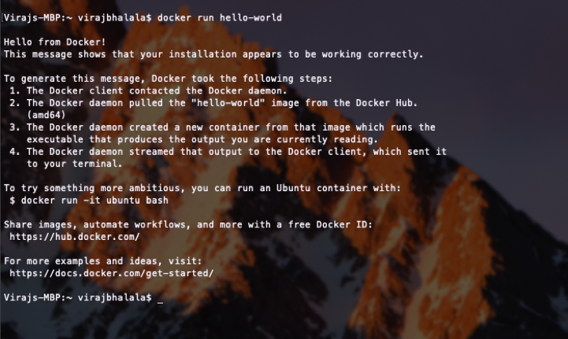
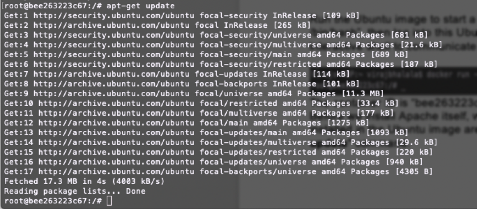
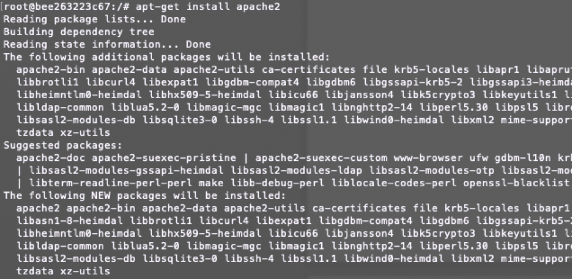
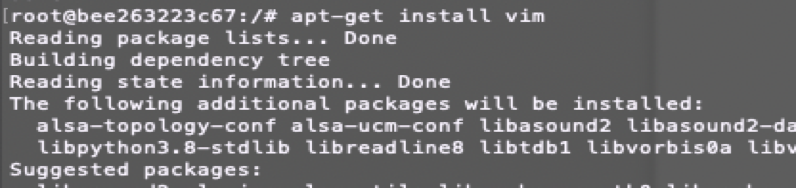
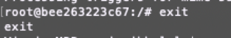
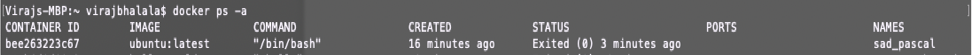
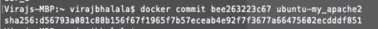
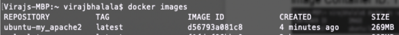

A tutorial on how to setup a web server on your local computer using docker
Docker is the delivery of environments, and we can also use these predefined environments to run specific programs, such as Ubuntu and Apache (a server end program). Docker is a sort of flexible “virtual machine”, providing the minimum environment for your programs, and the environment has little relationship with the host/local physical machine.
Let’s see how we can build a web server image which can be used to build containers. In our example, we are going to use the Apache Web Server on Ubuntu to build our image.
Tutorial resources and steps:
1. Install Docker Engine
https://docs.docker.com/engine/install/https://docs.docker.com/get-docker/
Once you are done installing Docker, test your Docker installation by running the “Docker run hello-world” command. Below is a screenshot when run this command successfully on Mac OS.

2. Pull an Ubuntu image from Dockerhub.
https://docs.docker.com/engine/reference/commandline/pull/To install Ubuntu run the "docker pull ubuntu" command as seen below.

The pull command fetches the ubuntu image from the Docker registry and saves it to our system. You can use the “docker images” command to see a list of all images on your system. This command shows us all Docker images present but in this case, we are specifically looking to verify the presence of the "ubuntu" Repository that has the "latest" Tag.

3. How to Commit Changes to A Docker Image with Examples
https://phoenixnap.com/kb/how-to-commit-changes-to-docker-imageRun the Ubuntu image to start a Docker container using “docker run -it ubuntu:latest /bin/bash”, then log into this Ubuntu container. Parameter “-it” of Docker brings you an interactive shell to communicate with the “virtual machine”.

The container ID is “bee263223c67” in the screenshot. Before we install Apache itself, we will want to make sure all of the packages pre-installed in the Ubuntu image are up to date. To do this, we will run the "apt-get update" command.

This will go through and automatically update any packages that need updates. Once that is complete, we can actually install the two packages we need. First will be "apt-get install apache2" command.

Next, we will install the VIM text editor via the "apt-get install vim" command.

Now Exit Ubuntu container.

To commit your ubuntu repository to a new image, you will want to first verify the current image Container ID. To this do, run the "docker ps -a" command.

In the example above, the Container ID is bee263223c67. We can now run the following command to create a new repository: "docker commit [containerID] [repositoryName]"

Check the new images using “docker images”.
